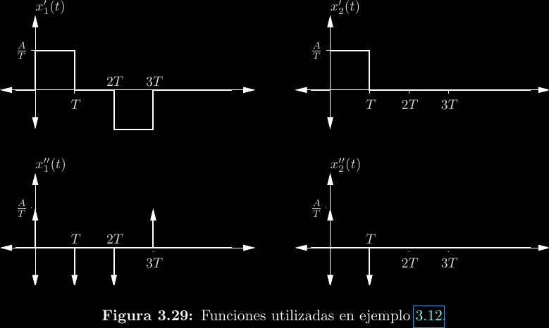

Transformada de Fourier
Mencionamos que el espectro de una función periódica continua está dado por los coeficientes \(c_k\) que resultan del análisis en series de Fourier. Además, notamos que este espectro es una función discreta, ya que \(k\) es una variable entera. Luego de desarrollar el análisis y síntesis en series, el mismo Fourier notó una forma de mejorar una gran limitante de su teoría, específicamente que solo sirve para funciones periódicas. La idea consistió en abusar una interpretación de funciones no periódicas, dentro de un rango finito, como funciones periódicas que tienen a ese rango como período.

Es posible realizar un desarrollo en series de Fourier para el caso anterior. Claro, solo será válido dentro de la región que realmente corresponde a la función original. Esta idea funciona, pero tiene otra limitante: el período "artificial" enmarca qué tanto de la función puede estudiarse de esta forma. Así, un paso más consiste en establecer \(T \to \infty\), con lo que se obtiene una herramienta capaz de estudiar funciones no periódicas en su totalidad, a la cual se le denomina transformada de Fourier: \[F(j\omega) = \mathcal{F}\{f(t)\}(j\omega) = \int_{-\infty}^{\infty}{f(t)e^{-j\omega t}\mathrm{d}t}\]
Nótese que esto no es más que una expresión distinta para los coeficientes de la serie exponencial compleja, ya que: \[c_k = \frac{1}{T}X(jk\omega_0)\]
La transformada de Fourier es un tipo de transformada integral, relaciona a una función \(f(t)\) con otra función \(F(j\omega)\). En otras palabras, transforma del dominio de tiempo al dominio de frecuencia. Tal como las series de Fourier sintetizan funciones periódicas a partir de su análisis en forma de sinusoides desfasadas con frecuencias discretas, una transformada de Fourier determina el contenido de frecuencias de una función. Nótese que ahora estas frecuencias son continuas y no un múltiplo entero de alguna frecuencia fundamental.
La transformada de Fourier tiene una inversa, que permite pasar del dominio de frecuencia al dominio de tiempo: \[f(t) = \mathcal{F}^{-1}\{F(j\omega)\} = \frac{1}{2\pi}\int_{-\infty}^{\infty}{X(j\omega)e^{j\omega t}\mathrm{d}\omega}\]
La transformada no inversa también se le conoce como transformada directa.
Condiciones de Dirichlet
No toda función tiene una transformada de Fourier definida. Excepto en puntos de discontinuidad, las condiciones de Dirichlet establecen las condiciones bajos las que esto es posible:
-
\(f(t)\) debe ser absolutamente integrable. \[\int_{-\infty}^{\infty}{|f(t)|\mathrm{d}t} < \infty\]
-
La cantidad de extremos (máximos y mínimos) locales de \(f(t)\) debe ser finita dentro de cualquier intervalo finito.
-
El número de discontinuidades de \(f(t)\) debe ser finito dentro de cualquier intervalo finito.
Escalón unitario e impulso unitario
El escalón unitario es una discontinuidad de "encendido o apagado", definido por: \[ u(t) = \begin{cases} 0; & t < 0 \\ 1; & t \ge 0 \end{cases} \]
Por su parte, el impulso unitario representa un cambio brusco en un instante de tiempo: \[\delta(t) = \begin{cases} 0; & t \ne 0 \\ \infty; & t = 0 \end{cases}\]
Y están relacionadas por \[\frac{\mathrm{d}}{\mathrm{d}t}u(t) = \delta(t)\]

Algunas transformadas de Fourier

Propiedades